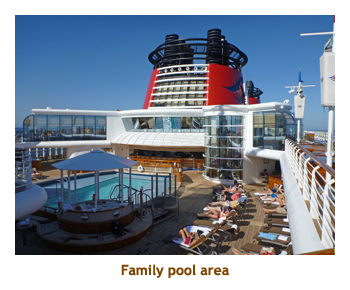
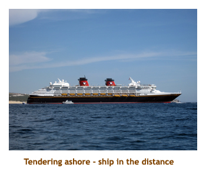

[ Home ] [ Travel ] [ Photography ] [ Pets ] [ Games] [ Rowing] [ Physics ]


Cruising on the Disney Wonder
Travel
Cruises
Past Cruises (Diaries)
Future Cruises
Rogues Galleries
Land Trips
Diaries (Land Trips)
Hawai'i - Big Island - 04'01
Hawai'i - Maui - 05'02
Hawai'i - Big Island - 04'03
Hawai'i - Kaua'i - 09'04
Hawai'i - Big Island - 04'06
Hawai'i - Maui - 04'06
Mainland China - 05'07
Phoenix, Arizona - 12'07
Greek Isles - 05'08
Hawai'i - Kaua'i - 09'08
Hawai'i - Big Island - 09'09
Hawai'i - Maui - 05'12
Hawai'i - Big Island - 04'13
Ireland - 08'13
Mexico - Cancun 11'13
France/Belgium/Lux 07'15
Hawai'i - Big Island - 05'17
England / Wales - 06'17
Hawai'i - Big Island - 09'19
Photography
Cameras
Underwater
Pets
Tara
Blackie
Whitey
Muffy
Ollie
Rusty
Fluffy
Rufus&Dufus
Games
Rowing
Physics
Rating (out of 5): Ship  Food
Service
Itinerary
Food
Service
Itinerary 
This cruise was a last minute decision based on a very low price for travel agents. Combined with our flight on Aeroplan points, it was cheaper to cruise than to stay home. Also, we had heard a lot about the Disney brand, but had never tried it before. This was a great chance for Marjorie to experience the Disney product.
The least desirable part of the cruise was the itinerary. We are not really into Mexico, and we had done this itinerary twice before. However, it was a chance to spend 7 days on the ship and enjoy the sunshine and warm weather. We didn't plan on doing an excursion at either of the two ports. This was the first cruise we have done where we had no commitments at all for the entire cruise - just time to sleep in and relax. For those of you who have followed our earlier cruises, this was also the first cruise where I decided I would not go to the gym - I was taking a week off from the dreaded rowing machine.
Pre-cruise and Day 1 (Nov 24, 25) - Checking out Los Angeles
We were up at 4:30 AM to get to the airport by 5:15. We parked at Park2Go.
The flight to Vancouver left a bit late at 7:30. At Vancouver we had less than 1 hour to connect
to our Los Angeles flight. In past trips we had to wait for our baggage on the carousel,
go through US customs pre-clearance and then recheck our bags. No way in one hour. This time, however,
we went straight to customs and there were shown a photo of our bags. We just said "Yeah, they're ours"
and we were on our way. Easy as pie! The LAX flight was ontime and we landed in LA
about noon. We shuttled to our hotel (Sheraton), checked in and went for lunch. We had wanted
to do the Red Lobster not far from the hotel, but 2 different employees warned us about visiting that part of town.
Not being adventuresome, we instead took the bus to Santa Monica pier. It was about 18 degrees out.
I wore shorts and was cool in the shade or breeze, but warm in the sun. We walked the pier and
then had a midday meal at Bubba Gump. Afterwards we bused back to the hotel and hiked
to a small grocery store for chocolate milk. It was dark by now. We returned to the hotel and
read for the evening.
The next morning we slept in. We had a light breakfast at Starbucks in the hotel lobby.
We packed our things, checked out and grabbed the 10:00 AM shuttle back to the airport.
No flights had arrived yet at this terminal, so we were the only ones checking in with the Disney person.
We were put on a bus with a few folks from another terminal building (there are 7 terminals!)
and driven to the San Pedro dock. We checked in at the cruise terminal and then
had to wait about a half hour until they opened the ship for boarding. We were given boarding numbers
and our number was called about 1/2 hour later. On the ship, the first thing we did was to head to the
restaurant reservation area to change our dinner seating. Because we booked last minute, we were
given late seating for dining - 8:15 PM. Uh, uh! They changed us to the 5:45 seating which was perfect.
Then we went up to the buffet for lunch. It was packed there! Our room was ready by 2:00.
We wandered the ship for a while and stopped at the excursions desk to book an afternoon snorkel
trip in Cabo. Our bags arrived at 3:30. Muster drill was at 4:00,
we sailed at 5:00 and we headed for dinner at 5:45. Our dinner mates were another "childless"
couple about our age group (Bob and Rokie). They were meeting their grandchildren after the cruise
to spend a few days at Lego Land. We had very enjoyable dinners with them throughout the cruise.
Tonight I had a beef fillet. Very good.
The entertainment was some Disney song and dance, plus a funny magician.
Days 2, 3 (Nov 26, 27) - Two days at sea
The next two days were days at sea. The first day was still cool and windy, while the second day warmed up
immensely as we headed south. We discovered Tritons restaurant for breakfast and lunch. It was quiet (ie.
few families) and had a great menu. The buffet was very crowded and the Parrot Cay Restaurant featured
noisy "character" breakfasts. So, Tritons worked out just fine. We latched on to some Disney experts at the
first trivia session (Lee and Debbie) and stuck with them for most of the cruise.
Marjorie and I contributed very little, while the
experts knew almost everything! As a result, our take for the first two days were some Mickey Mouse
medals and several key chains. All of the trivias were multiple choice and were very difficult if you hadn't
seen all the movies and visited all the parks. There was lots to do during the day - we took in a port lecture
and a character party at the pool. Marjorie attended a presentation by Disney Vacation Club which was really
a time share thing. For dinner I had shrimp pasta, and, on the next night, mixed grill (beef,
lamb, sausage, shrimp). One of the nights was formal night. Only about half the guests dressed up, the rest
just wore their "country club casual". The entertainment was the "Golden Mickeys" song and dance show (excellent!) and
the next night we watched "The Avengers" in 3-D. Oh, I should mention that the ship has 3 main dining rooms.
Each night you rotate to a different restaurant that has the same table numbers and the same waiters. Our
room card had the restaurant sequence on it, so it was easy to tell where we ate next. The menus seemed
to be the same so we were just getting different decor.
|  | 
|
Day 4 (Nov 28) - A day in Puerto Vallarta
This was our first port day. We had been to PV twice before, so hadn't planned anything at all. It was a hot
sunny day with a predicted temperature of 31 degrees. We were up at 7:00 to see the ship dock. Then we
had breakfact in Tritons. After eating we headed off the ship for a tour of the area. Amazingly, there was a Wal-Mart
right across from the ship. We just had to visit the store, and we picked up some vanilla and a can of local beer.
We had booked a snorkel trip for the next day in Cabo, and there was a message waiting for us that it had been
cancelled. After lunch we walked to a liquor store that was "just three stoplights away". We walked for almost an
hour over uneven sidewalks and along a dirt trail. We did find the store, but didn't buy anything - too expensive -
the ship's store was cheaper. We were smart and took the local bus back. Even though we had to stand, it was
better than walking back. We reboarded the ship, showered, read and then did afternoon trivia. For dinner I had
lamb shank which was very good. The 7:30 show was a pair of comedians and the 8:30 show was song and
dance - Toy Story: The Musical. Both shows were excellent.
Days 5 ,6 (Nov 29, 30) - Two days in Cabo San Lucas
Due to local unrest, the port of Mazatland has been dropped by all of the cruise lines. To make up for it, the ships
do an overnight in Cabo San Lucas. So, we had two days in port. There are no docking facilities in Cabo, so
we had to tender to and from the ship. As our snorkel tour was cancelled, we had nothing
planned for the 2 days. It was about 30 degrees and sunny both days. We had been to Cabo twice before, but
that was 8 years ago. Wow, had it ever changed. The waterfront was completely built up now. We walked around the
harbour to check out the new facilities (hotels, boutiques, restaurants, etc). There
were lots of pelicans on boats and ramps looking for handouts. Then we walked into the older part
of town and found an internet cafe in a small, pink stucco hotel. We actually used it both days, at $1.50 for a half hour.
Other than that, we visited a small liquor store to get some local beer to take onboard.
We spent the remainder of time on the ship - trivia (won some hats), reading, wandering.
Marjorie found time to do a laundry too. There are three self service laundry areas on board.
One night I had shrimp and
scallop risotto, and the following night I had lobster tail. The lobster night was a "semi-formal" night, but based on the
response to the earlier formal night, I didn't bother to dress up, nor did most of the crowd.
The entertainment we attended over the two evenings was - "Wreck It Ralph" (movie),
a 10:00 PM pirate deck party complete with fireworks, an excellent ventriloquist and a song and dance number called
"Dreams" which was wonderful. All of the song and dance shows in the main theatre seemed to last at least an hour,
sometimes too long for the little ones in the audience.
|  | 
|
Day 7 (Dec 1) - Another day at sea
Today was the final day of the cruise and a sea day as we headed back to LA. We were suddenly back
in the cool and windy northern weather. It was about 16 degrees and very windy. We were up about 7:30 and
had breakfast at Tritons. We did a wander of the ship and then went to "Disney Theme Park Tune" trivia. It
consisted of snippits of tunes from the various theme park rides. We had to name the attraction, the park(s)
where it was located, plus a bonus question about the attraction. It was tough. Alone we would have gotten
maybe 2 points out of 75. However, with our Disney buddies we got in the 60's and the winner had all 75!!
Wow, did we feel dumb! We had lunch at Tritons and then packed our bags. We wandered around the ship
looking for Disney characters. They were all over! We did a few forays outdoors too, but it really was windy
and cool. I should mention that the ship had a promenade deck that encircled the ship on one level. It's
hard to find a ship with a complete promenade deck these days. It was great for walking laps around the ship.
For our final dinner I had beef of some sort - can't remember.
The 7:30 entertainment was a passenger talent show that we somehow missed. The 8:30
entertainment was a wrap up of the past week's shows, plus a comedian who spoke a mile a minute.
We put our bags out in the hallway and went to bed.
Day 8 (Dec 2) - Disembarking in Los Angeles
Today was disembarkation day. Disney handles things a bit differently that other lines. Instead
of having to all crowd into the buffet for breakfast, we instead went to our "starting" dining rooms for
a formal breakfast and debarkation. After breakfast we waited about half an hour for our number to be
called. We left the ship and picked up our luggage from the terminal building. We went through US
customs and out to the waiting LAX bus. We arrived at the airport about 9:30 and our flight was at 3:30.
Checkin and security used up some time, but we still had 5 hours to kill. We had lunch at Carl's Jr.
Our flight was a bit late leaving which tightened our Denver connection to less than an hour. Landing
in Denver we hustled to the departing gate as the plane was loading. Fortunately our luggage made
it too. We arrived in Calgary about 10:30 PM. Canada customs was quick but it was a while to get our
luggage. By the time we shuttled to the car park and drove home it was 11:30. The kitties welcomed
us home and all was fine there. It had been a short but very nice holiday.
A review of Disney cruises
As promised, here is a comparison of Disney Cruise Lines to the other mass market lines from the point of view of a "childless", older adult passenger. The following items are in no particular order.
- As expected, the ship is full of kids. Most of them seemed to be 12 or under, with not too many teenagers. I guess it's the younger crowd that is attracted to Disney. On the whole they were very well behaved and didn't bother us at all. The ship has several adults only areas - pool and deck chair area, lounges, restaurant - that are very quiet. we also found the promenade deck to be almost deserted. It was great to sit out in the promenade deck chairs and read on the warm days.
- Because the ship is targeting kids, most of the cabins seem to be for 3 or 4 people. The capacity at double occupancy is 1,754 pax, but the "all berths full" capacity is 2,700 pax. Our sailing was quite full with 2,211 pax. The buffet, kids pool area and character interaction areas were quite crowded, but most of the ship was not too bad.
- The entertainment was top notch in quality and quantity. The movie theatre was the best we had seen at sea and included many 3-D movies. There were two live show venues each evening at different times, so you could take in two shows each night. The main theatre had plenty of seating and we always were able to get a seat. The song and dance shows were spectacular, with wonderful sets and music. All of the shows were Disney themed. The fireworks show was awesome and unheard of at sea.
- The concept of moving restaurants (with your waiter and dinner mates) each night made dining a bit more interesting. The food was very good - typical cruise cuisine. There was a nice selection each night and lots of variety from night to night.
- Breakfast and lunch in the dining room was open seating. On other lines we always ask for a "table to share" and we're seated with other people. It's a nice way to meet other passengers. However, Disney will not do that. They always put you at your own table. This was just like Blu on Celebrity. We like to share.
- There was no library or games room aboard. I was surprised about the games room what with all the families present. There was also no casino (which didn't bother us at all).
- Trivia was disappointing as it was all multiple choice and very Disney centric. Any of the "general" trivia questions were very American. For Canadians that aren't that familiar with Disney or American history / politics, it was frustrating. However, our team mates were lots of fun and we really did have a good time.
- Disembarkation day is never fun! However, Disney eases the pain by having you assemble at an assigned restaurant for breakfast. No squashing into the buffet for that final mouthful. Rather, a full menu breakfast at your regular assigned dining table with your regular dinner mates and wait staff. Very nice! It also gives you a chance to say goodbye to your weeklong dinner mates.